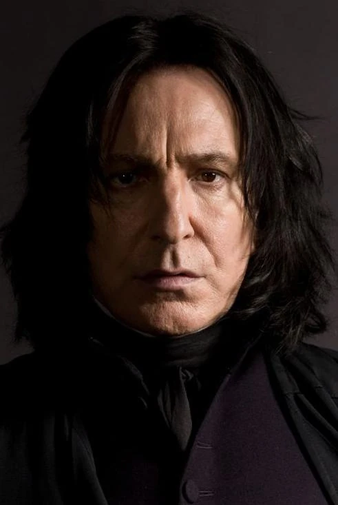
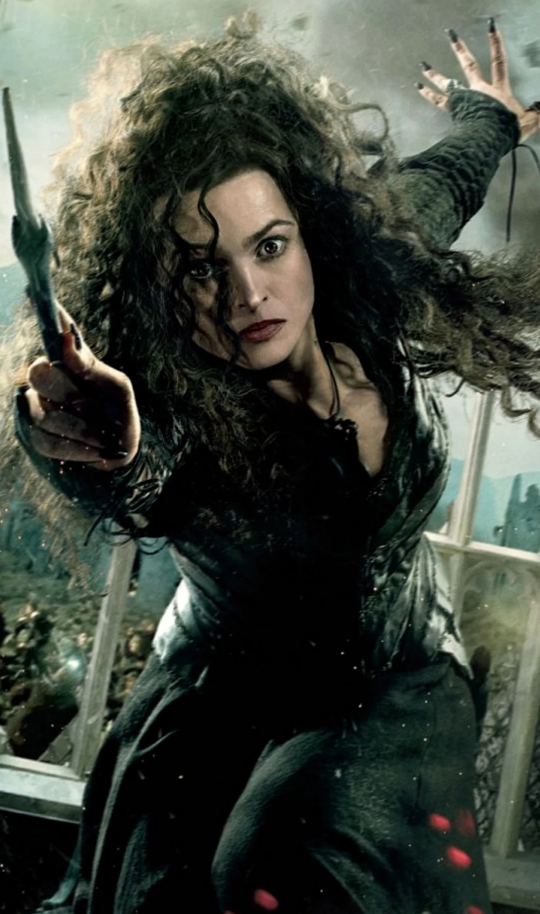
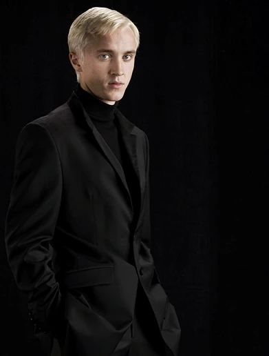
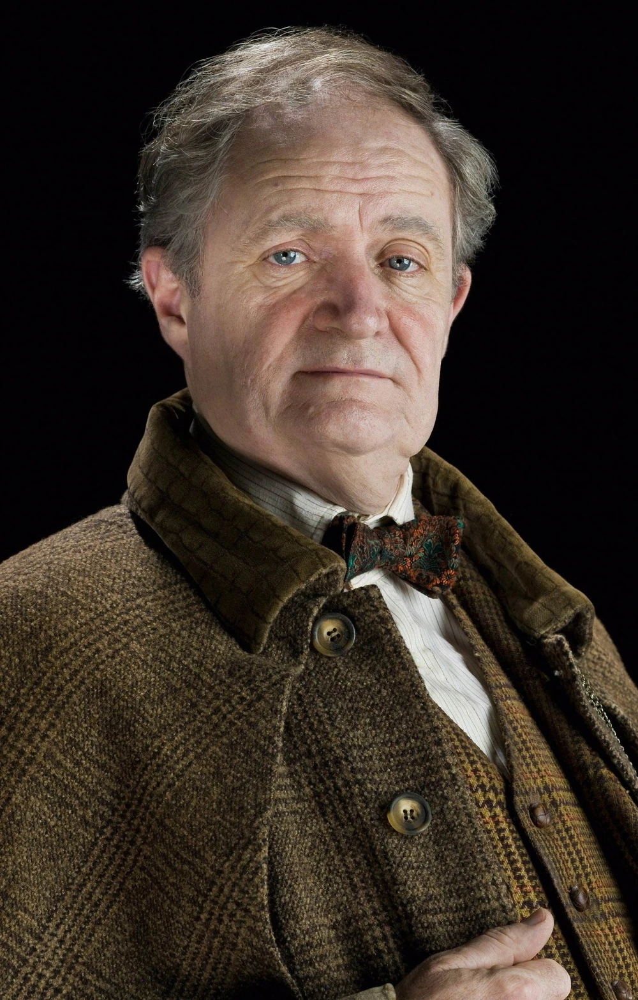
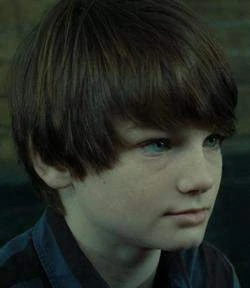

Założyciel - Salazar Slytherin
Slytherin — jeden z czterech domów w
Szkole Magii i Czarodziejstwa w Hogwarcie, założony przez Salazara
Slytherina. Zakładając dom, Salazar rozkazał Tiarze Przydziału, aby
wybierała uczniów, którzy posiadali kilka szczególnych cech, które
najbardziej cenił. Te cechy to: przebiegłość, zaradność, przywództwo i
ambicja. Właśnie z tego domu pochodziła większość śmierciożerców.
Uczniowie
Tom RiddleLord Voldemort (właśc. Tom Marvolo Riddle Jr; ur. 31 grudnia 1926 - zm. 2 maja 1998 r.) — czarodziej półkrwi, potężny czarnoksiężnik oraz przywódca śmierciożerców. Ślizgon za czasów nauki w Szkole Magii i Czarodziejstwa w Hogwarcie. Tom urodził się 31 grudnia 1926 roku w sierocińcu Wool's jako jedyne dziecko Toma Riddle'a i Meropy Gaunt. W wieku jedenastu lat rozpoczął naukę w Hogwarcie i został przydzielony do Domu Węża, Slytherinu. Już za czasów edukacji zaczął tworzyć pierwsze horkruksy oraz planować zawładnięcie światem czarodziejów. Po zakończeniu nauki stworzył grupę popleczników, których nazwał śmierciożercami. Początkowo pracował w sklepie Borgin & Burkes, a po śmierci Chefsiby Smith słuch o nim zaginął. Wkrótce wrócił i wszczął Pierwszą Wojnę Czarodziejów. W 1981 roku utracił swą moc próbując zabić małego Harry'ego Pottera, gdyż jego zaklęcie odbiło się od dziecka i rykoszetem ugodziło jego samego. Voldemort powrócił czternaście lat później na cmentarzu w Little Hangleton. W 1998 roku został zabity przez Harry'ego Pottera, podczas Drugiej Bitwy o Hogwart. |
Severus Tobiasz Snape Severus Tobiasz Snape (ang. Severus Tobias Snape; ur. 9 stycznia 1960 - zm. 2 maja 1998 r.) — czarodziej półkrwi, dyrektor Szkoły Magii i Czarodziejstwa w Hogwarcie w czasie roku szkolnego 1997-1998, nauczyciel eliksirów (ok. 1980-1996) oraz obrony przed czarną magią (1996-1997). Syn czarownicy Eileen Prince i mugola Tobiasza Snape'a. Śmierciożerca oraz szpieg Albusa Dumbledore'a i członek Zakonu Feniksa. Severus Snape mieszkał z rodziną w domu, przy ulicy Spinner's End, która znajdowała się niedaleko domu rodziny Evansów. W wieku dziewięciu lat poznał Lily Evans oraz jej starszą siostrę - Petunię. W 1971 roku otrzymał list ze Szkoły Magii i Czarodziejstwa i w tym samym roku rozpoczął w niej swoją magiczną edukację, a Tiara Przydziału umieściła go w domu Salazara Slytherina. W tym samym roku do szkoły zaczęła chodzić wielka i jedyna miłość Severusa - Lily, która została przydzielona do Gryffindoru. Severus Snape w czasie nauki w szkole stał się bezpośrednim wrogiem Jamesa Pottera oraz Syriusza Blacka, przez których często był poniżany. Już w młodym wieku rozwijał swoją pasję i zdolności dotyczące czarnej magii. Jego zachowanie oraz zaprzyjaźnienie się z osobami wielbiącymi czystość krwi położyło kres jego przyjaźni z Lily Evans na piątym roku. Próbując odzyskać uczucia Gryfonki[8], dołączył do grupy popleczników Czarnego Pana zwanych Śmierciożercami. W czasie nauki w szkole stał się członkiem Klubu Ślimaka, najprawdopodobniej ze względu na swoje zdolności do eliksirów. Horacy Slughorn trzymał jego zdjęcie wraz ze zdjęciami innych uczniów, jednakże na podstawie tego, że stało z tyłu, można domniemywać, że Horacy nie miał wielkich nadziei w związku z jego przyszłością. Krótko przed wydarzeniami z 31 października 1981 roku, Severus zmienił front i z oddanego sługi Lorda Voldemorta stał się sługą Dumbledore'a i jego szpiegiem wśród śmierciożerców. Z wielkim poświęceniem robił wszystko, by Czarny Pan nie odkrył jego nielojalności. Wbrew opinii wszystkich, do końca swojego życia był wierny tylko Albusowi Dumbledore'owi. Kiedy umarł, prawda o jego działaniach wyszła na jaw, a i sam Harry dowiedział się, że wszystko co robił Severus, miało na celu jego ochronę. Lojalność i oddanie Snape'a względem Dumbledore'a były tak wielkie, że zgodził się go zabić. Przed śmiercią obiecał dyrektorowi chronić uczniów przed działaniami śmierciożerców, którzy lada dzień mieli przejąć kontrolę nad Ministerstwem Magii. Snape uczestniczył później w bitwie o Hogwart, jednak został zamordowany przez Lorda Voldemorta, który zlecił swojemu wężowi Nagini ukąszenie go. Czarny Pan błędnie uważał, że to właśnie Severus jest panem Czarnej Różdżki. W rzeczywistości jej prawowitym właścicielem był Draco Malfoy, który rozbroił Albusa Dumbledore'a na Wieży Astronomicznej. Następnie w czasie potyczki w Dworze Malfoya, Harry rozbroił Dracona, więc tym samym to on stał się prawowitym panem różdżki, dzięki czemu pokonał Czarnego Pana. Po jego śmierci, Harry Potter zadbał o to, by jego portret zawisł w Szkole Magii i Czarodziejstwa w Hogwarcie oraz poinformował świat czarodziejów o jego bohaterstwie i oddaniu Zakonowi i Albusowi Dumbledore'owi. Co więcej, aby uczcić jego pamięć, nazwał na jego cześć swojego drugiego syna - Albusa Severusa Pottera. |
Bellatriks Lestrange Bellatriks Lestrange (ang. Bellatrix Lestrange; z d. Black; ur. 1951, zm. 2 maja 1998 r.) — czarownica czystej krwi. Najstarsza córka Druelli Rosier i Cygnusa Blacka, pochodziła z Rodu Blacków. Miała dwie młodsze siostry: Andromedę Tonks i Narcyzę Malfoy. Bellatriks zginęła podczas bitwy o Hogwart z rąk Molly Weasley, matki Rona Weasleya. Prawdopodobnie użyła umocnionej Drętwoty, co zaowocowało zatrzymaniem akcji serca lub Glaciusa, a potem Diffindo, albo samej niewerbalnej Avady Kedavry. Do Szkoły Magii i Czarodziejstwa w Hogwarcie uczęszczała od 1962 roku i została przydzielona, jak większość jej rodziny, do domu Salazara Slytherina. Bella związała się z grupą Ślizgonów, z których prawie wszyscy zostali śmierciożercami po ukończeniu szkoły. Była jedną z najbardziej oddanych zwolenniczek Voldemorta, ale również jedną z najgroźniejszych i najbardziej sadystycznych. Odebrała życie wielu niewinnym stworzeniom (na przykład Zgredkowi), ale też torturowała innych ludzi (na przykład rodziców Neville'a Longbottoma lub Hermionę Granger). Wyszła za czarodzieja czystej krwi Rudolfa Lestrange, ponieważ tego oczekiwała od niej rodzina, lecz ona sama kochała tylko jednego czarodzieja, Lorda Voldemorta. Popierała jego reformy oraz niechęć do mugoli, mugolaków, charłaków, a nawet czarodziejów półkrwi. Po upadku swojego pana razem z mężem Rudolfusem, szwagrem Rabastanem i śmierciożercą Bartym Crouchem Juniorem torturowała klątwą Cruciatus znanych aurorów Alicję i Franka Longbottomów, rodziców Neville'a Longbottoma, chcąc uzyskać od nich dane na temat miejsca pobytu Toma Riddle'a. Wraz z Voldemortem miała nieślubną córkę Delphini, którą urodziła w sekrecie niedługo przed Bitwą o Hogwart. Musiał być to dla niej ogromny zaszczyt biorąc pod uwagę jej miłość do Czarnego Pana. |
|---|---|---|
Draco Lucjusz Malfoy Draco Lucjusz Malfoy (ur. 5 czerwca 1980 roku) — czarodziej czystej krwi, jedyny syn Lucjusza Malfoya i Narcyzy Malfoy (z d. Black). Uczęszczał do Szkoły Magii i Czarodziejstwa w Hogwarcie w latach 1991-1998, podczas ceremonii przydziału został przydzielony do Slytherinu, tak jak wszyscy z jego rodziny. Zazwyczaj trzymał się obok swoich przyjaciół: Vincenta Crabbe'a i Gregory'ego Goyla. Na piątym roku szkolnym został prefektem oraz dołączył do Brygady Inkwizycyjnej. Na szóstym roku swojej edukacji został Śmierciożercą. Po śmierci Lorda Voldemorta, Draco ożenił się z Astorią Greengrass (młodszą siostrą Dafne). W 2006 roku na świat przyszedł ich syn, Scorpius Hyperion Malfoy. |
Horacy Eugene Flaccus Slughorn Horacy Eugene Flaccus Slughorn (ang. Horace Slughorn; ur. 28 kwietnia pomiędzy 1882 a 1913 r.) — czarodziej czystej krwi, ekscentryczny nauczyciel eliksirów w Szkole Magii i Czarodziejstwa w Hogwarcie, najpierw w latach czterdziestych (w tym czasie również opiekun Slytherinu), a za namową Albusa Dumbledore'a, ponownie od 1996 roku. Twórca Klubu Ślimaka przeznaczonego dla uczniów popularnych, wybitnie uzdolnionych lub mających wpływowych krewnych. Dwukrotnie w ciągu życia zażył Felix Felicis - w wieku dwudziestu czterech i pięćdziesięciu siedmiu lat. Posiadał pianino, z którym nie potrafił się rozstać. Dumbledore poprosił Harry'ego Pottera, aby wydobył od Slughorna wspomnienie dotyczące Toma Riddle'a. Podczas swojej pierwszej kadencji profesor Slughorn opowiedział Voldemortowi o horkruksach. |
Albus Severus Potter Albus Severus "Al" Potter (ur. między 1 września 2005 roku a 31 sierpnia 2006 r.) — czarodziej półkrwi[1]; drugie dziecko i najmłodszy syn Harry'ego Pottera i jego żony, Ginny Potter (zd. Weasley). Albus miał dwójkę rodzeństwa - starszego brata, Jamesa Syriusza, a także młodszą siostrę, Lily Lunę. W 2017 roku Albus rozpoczął naukę w Szkole Magii i Czarodziejstwa w Hogwarcie wraz z Rose Granger-Weasley i Scorpiusem Malfoyem, gdzie, ku wielkiemu zdziwieniu, został przydzielony do Slytherinu[2]. Tam Albus szybko zaprzyjaźnił się ze Scorpiusem, synem Dracona Malfoya. |